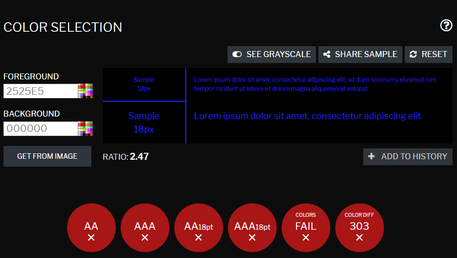
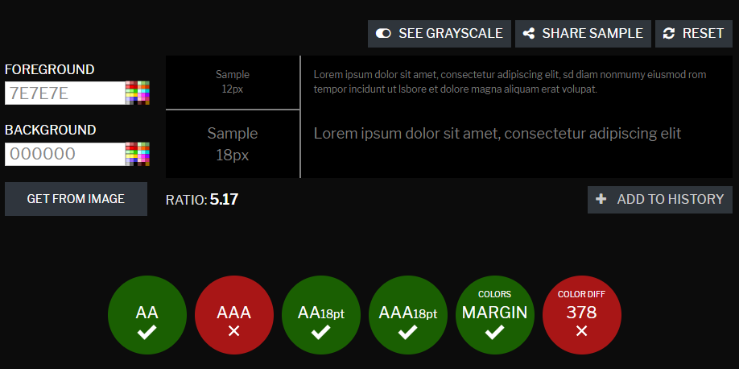

Dokumentation projekt Vt20
1. Idébeskrivning
En planerings hemsida där man kan lokalt lägga in deadlines och att göra listor. Målgruppen är alla
som vill
planera sitt liv. Det kan vara studenter som vill ha överblick över läxor, eller arbetande som vill ha en
lokal planering tillgänglig på en hemsida. Det kommer göras med hjälp av cookies då jag ännu inte vet hur
man bygger dynamiska sidor som kräver kontakt med en server. Med cookies blir det en hybrid. Inspiration tas
från Trello.com där man kan göra
visuella listor på vad man ska göra, gör, och har gjort eller vilken typ av lista som helst. Den största
utmaningen kommer alltså bli funktionaliteten på listorna och sortering av lokal data. Har kollat in
neomorphism design och tänker att jag ska göra den här sidan på ett sådan stilrent sätt.
2. Planering
2.1 Handskiss

Hela sidan är en column när det är i mobil layout
2.2 Schema
| V. |
På lektionen |
Utanför lektionen |
| 4 |
Brainstorma idéer, skissa och undersök hur andra sådana sidor ser ut.
|
Fortsätta skissa och komma på idéer för funktionalitet.
|
| 5 |
Fråga Leo om man får styla planering.html så att det ser lite trevligare ut att läsa.
Skissa mobil samt desktop layout.
(Pappersprototyp-ish)
|
Undersök hur man implementerar cookies
|
| 6 |
Börja koda block-strukturen för hemsidan.
|
Kom på hur cookies bör användas i min hemsida
|
| 7 |
Bygg upp listskapandet
|
Fortsätt på det du inte hinner med på lektion.
|
| 8 |
Bygg upp listskapandet
|
Fortsätt på det du inte hinner med på lektionen
|
| 9 |
Fixa så att sidan visar listor baserat på sparad data
|
Fortsätt på utseendet.
|
| 10 |
Fixa så att det går att lägga till och ta bort listor och punkter
|
Hitta/Fixa buggar och fortsätt med det jag inte han med på lektionen
|
| 11 |
Lägg till info/hjälp pop-up med bilder och extra för betyg ;)
Lägg till mer documentation i alla css och javascript
|
Finslipa och gör en desktop version
|
| 12 |
Fixa sista småsakerna, testa och utvärdera projektet
|
gör det som inte blir färdigt.
|
3. Dokumentation
Lektion vecka 4
Jag har kommit på vilken slags hemsida jag ska skapa. Och har börjat skissa layouten för olika stora skärmar.
Det
svåra under denna lektion var att komma på vad jag skulle ta mig an som inte var tråkigt och som skulle
kunna
utmana mig. Då jag hållit på en del med statiska sidor av olika typer var det svårt att komma på något som
intresserade mig. Det som hjälpte var att diskutera med klasskamrater och framför allt läraren (Emil Wilbas)
vilket tillslut gav mig inspiration. En större del av lektionen hade passerat när jag väl valt vad jag ville
göra så jag han tyvärr inte med mycket mer. (Jag skriver detta lite senare på dagen) Till nästa lektion
kommer
jag att ha en mental plan på vad jag ska göra; vilket förhoppningsvis gör att jag kan vara mer produktiv än
vad
jag var idag.
Lektion vecka 5
Idag har jag främst undersökt hur man hanterar lokalt sparad data. Bland annat hur man sparar och tar fram
sparad data och hur man kan spara flera olika värden på ett effektivt sätt och jag har även skissat lite
mer.
Har lagt upp en skiss men jag glömde min förra skiss hemma så den får jag lägga in bild på lite senare. Jag
har även börjat planera vilken data jag kommer att spara och hur jag ska strukturera det. Det svåra just nu
är att hitta ett bra sätt för hur jag ska göra det möjligt att skapa så många listor man vill. Bör kanske ha
ett max antal men jag vill ändå att det skulle vara möjligt om jag inte hade ett max antal. Jag vill att i
princip allt man kan göra på min sida ska vara tillgängligt på index.html listorna kommer alltså att finnas
bredvid varandra men man kolla bara på en åt gången. Och om man inte sparat något data ska det inte finnas
massa tomma listor att scrolla mellan. Det ska inte finnas något mer än kanske en skapa lista knapp och
något mer.
Till nästa lektion tänker jag att jag ska börja skriva ett test program på hur jag sparar och visar data och
vad jag ska visa om det inte finns någon sparad data.
Lektion vecka 6
Idag har jag först ändrat utseendet/färgvalet för min sida och sedan jobbat på functionaliteten. Har börjat
få till en function som skapar en nu sak men hade lite problem med att lägga till det i rätt del av html
documentet. Fick till det till slut så allt funkar hittills som det ska. Kommer dock behöva ändra lite
framöver då jag fixar till det så att man kan skapa flera listor. Det främsta problemet jag hade idag var
att förstå mitt css dokument då jag hade glömt lägga till kommentarer som förklarar vad jag ändrar utseende
på. Det gjorde att jag behövde lägga mer tid på att hitta var jag skulle göra ändringar än vad jag har
tänkt. Jag la därför till en del kommentarer. Förutom det ändrade jag även en större del av färger till
variabler om de skulle användas ett flertal gånger i documentet så att det blir lättare att ändra färgvalet
på sidan. Det hjälper mycket till en potentiell färg ändrings funktion.
Nästa lektion är efter lovet och jag tänker att jag ska jobba på funktionaliteten utanför lektionen då jag
vill ha till att fyll sidan med mer. Förhoppningsvis blir jag
färdig med en större del av funkktionaliteten. Men om jag inte blir färdig kommer jag fortsätta på
lektionen.
Lektion vecka 8
Under denna lektion har jag suttit med funktionaliteten med localstorage. Har testat flera olika sätt som jag
kan strukturera upp datan jag vill spara och har bestämt mig för ett sätt. Jag kommer spara en lista som
innehåller alla listor. Tyvärr har inte jag kunnat koncentrera mig så bra som jag hade velat och inte fått
gjort allt jag hade tänkt. Det har varit en rätt högljudnivå i klassrummet vilket gjort det svårt att tänka.
Speciellt då det jag håller på med är helt nytt för mig och det tar ett tag att förstå hur allt fungerar.
Till nästa lektion vill jag ha fått till en större del av samarbetet mellan back-end och front-end så att
jag kan potentiellt lägga till mer info om varje list-element.
Lektion vecka 9
Idag har jag arbetat framför allt med att få till funktionaliteten på sidan för listskapandet. Jag satt i
korridoren utanför biblioteket och jobbade då jag inte kunde koncentrera mig på lektionen. Hade lite problem
med att iterera genom listor som skulle tömmas men fick till det tillslut. Jag har nu märkt att det inte är
jättelång tid kvar tills allt ska vara färdigt och tänker därför lägga ner mer tid hemma på att få till
saker. Framförallt att fylla sidan med information och bilder. Tänker mig att jag ska han en del som
förklarar hur listskapandet fungerar. Nästa lektion tänker jag alltså lägga tid på sidans utseende och
information.
Lektion vecka 10
Likt förra veckan har jag idag suttit med funktionaliteten för sidan. Framför allt att börja använda
eventlisteners. Men innan det gjorde jag färdigt ta bort funktioner som ska ta bort specifika listor eller
saker i listor. Jag fick problem med att få tag på rätt element i DOM documentet men tack vare att jag
använde console.log kunde jag se i hemsidans console vilket jag var på. När jag kom på att jag kunde använda
console.log gick det mycket bättre. Jag sitter dock just nu med ett liknande problem då jag håller på med
eventlisteners. För på min sida måste jag ha funktioner som körs både när sidan laddar första gången och när
listor/saker läggs till. Då behöver jag komma åt rätt information för att sätta eventlisteners på rätt
objekt, vilket jag har lite problem med. Till nästa lektion vill jag ha fått färdigt alla eventlisteners så
att jag kan börja lägga till mer data så som bilder och texter för att visa på en högre nivå av kunskap.
Förhoppningsvis har jag inte lagt ner för mycket tid på funktionaliteten.
Lektion vecka 11
Skriver detta på kvällen efter lektionen: Idag har jag börjat på info/hjälp delen där jag kommer att visa
bild och texthantering. Dessutom har jag börjat fixa och är nästan färdig med att göra en desktop anpassad
vy; Möjligen gör jag en ipad storlek för sidan också. Nästan all funktionalitet är färdig på sidan. Tänkte
lägga till att man kan klicka Enter istället för att klicka på en knappa på skärmen. Förutom det funderar
jag på att ge sidan två färgscheman men vad jag måste göra till nästa lektion är att fixa/redigera bilder
och göra illustrationer som ska finna i info/hjälp delen. Tanken är att det ska vara en del där man kan
läsa/se hur man använder sidan. Då måste jag göra ett flertal bilder som visualierar det. Möjligtvis att en
del visar tre bilder efter varandra. Det finns alltså mycket mer jag skulle kunna lägga till på sidan men
det viktigaste är att det blir en bra helhet och att jag även får tid till att testa sidan och utvärdera
hela projektet. Därför tänker jag nog bara göra färdigt desktop anpassningen och info/hjälp-delen.
Jag funderar dock på om jag, efter jag lämnat in projektet, ska fortsätta och finslipa på min applikation då
jag tänker skicka in den till skol-galan. Det hade varit kul om man vann något där eller i alla fall fick
någon bekräftelse om att man gjort ett bra jobb.
Lektion vecka 12
Idag har jag jobbat på distans och framförallt försökt lösa buggar som jag har just nu i min applikation. Det
har gått sådär och jag håller fortfarande på med lösningarna. Vad jag har märkt från att jobba på distans är
att jag har svårt att koncentrera mig i mitt rum och tänker därför sätta mig på något bibliotek, så länge
som dem är öppna, framöver. Då detta var sista lektionen har jag en del saker jag måste göra innan jag ska
lämna in. Tänker lägga fokus på text och bilder då det är det som bedöms och förhoppningsvis hinner jag med
allt jag vill göra.
4. Testning
4.1 webbläsarna
Min sida fungerar utan problem på chrome, opera, firefox och microsoft edge men inte på internet explorer,
både dator och mobil funkar bra. Detta är på grund av att internet explorer inte verkar ha support for de
ikoner som min sida använder vilka ligger på en extern server. Dock fanns det ett litet problem med
scrollbaren. Att använda "overflow: overlay" var inte supportat av alla webbläsare vilket gjorde att
listorna utseende kunde bli lite felplacerade men annars kunde jag inte hitta något annat.
4.2 Validering
4.2.1 CSS
Vad gällde css validering fanns det endast problem med att jag använde css variabler och overflow: overlay;.
Vilket enligt mig är utmärkt resultat, men jag har lite svårt att förstå varför validering såg variabler som
ett problem då jag gjorde exakt som w3schools rekommenderade.
4.2.2 Html
Här har jag endast fått varningar vad gäller användning av headers i syfte av att hjälpa screen readers. Det
är något jag bör ha tänkt på och kollat in lite mer exakt hur jag borde ha använt dessa. Bland annat hade
jag missförstått lite vilket syfte h1 har. Förutom detta fanns det inte några fel med detta dokument.
4.2.3 javascript
Här var det enda problemen/varningarna jag fick att inte allt jag skrivit skulle funka med alla webbläsarna,
mer specifikt äldre webbläsare. När jag skrev koden var jag väldigt tydligt med att alltid använda semicolon
för att avsluta rader, trots det fanns det lite platser där jag glömt detta. Det är inte något som förstör
koden men var något som valideringarna uppmärksammade.
4.3 Contrastchecker


I mitt fall har jag valt att gå emot vad contrastchecker visar och fortsätta använda de färger jag valt.
Anledningen till detta är först för att i den här applikationen så ligger färg fokuset på att den visuellt
ska vara enhetlig med min egen sida och att den ska vara i "darkmode". Det resulterar i att man inte kan ha
för starka kontraster vad gäller färgstyrka då hela idén är att det ska komma mindre ljus från skärmen och
det på så sätt ska vara snällare på ögonen. Trots det hade jag inte trott att det skulle vara så dåligt
resultat och då jag själv bland annat testade monokromt hade jag inte några problem att se allt tydligt.
4.4 På telefon
På telefon ser det ut exakt som då man minskar fönsterbredden till minsta och alla knappar funkar som det ska
vad jag testade.
här är länk till video av sidan:
https://drive.google.com/file/d/1zJeD6pgyl2MjatCe-d0FKjs9H2cjF29X/view?usp=sharing
5. Utvärdering
Planering
Enligt mig så var planeringen tillsammans med dokumentationen varje vecka väldigt användbar för att hålla
koll på vad jag höll på med och vad jag behövde göra. När det är en så lång period som detta projektet hade,
så kan det vara svårt att hålla uppe fokuset genom hela projektet. Men för mig har det inte varit något
problem. Jag var dock lite optimistisk med hur lång tid vissa saker skulle ta att göra. Bland annat,
tidigare i projektet, trodde jag att det skulle gå hyffsat snabbt att få till applikationen trots att jag
inte direkt hade lärt mig javascript innan. Jag hoppade in i min idé rätt så blint vad gällde hur mycket kod
jag skulle behöva skriva och lära mig. Det resulterade i att jag framför allt jobbade på koden och inte på
vad detta projektet faktiskt skulle bedömas på. Jag hoppas bara att det jag gjort är tillräckligt ad gäller
den saken.
Process
Processen under hela projektet har gått bra för mig. Jag har dokumenterat varje vecka hur det går och vad jag
håller på med i stunden samt vad jag tänker på. Dock tycker jag att det har varit svårt att veta vad jag
borde ha fokuserat på och när. Det här var det första stora projektet som vi gjort både vad gäller tid och
skala på sida. Dessutom har vi inte några konkreta exempel på hur man ska ta sig an en sådan här uppgift.
Alltså i vilken ordning som man kan göra saker för att arbetet ska bli effektivt. Ska man först fokusera på
vad som ska finnas på sidan? all text och all bilder? eller ska man börja på helhetsutseendet först? Sen är
det all funktionalitet som man skulle vilja fanns också. I detta fallet blev det en blandning där man la
till lite av allt allt eftersom och gjorde en planering som verkade rimlig. I visa fall, som med mig och
koden, så kan prioriteringar ha blivit lite fel och man har inte hunnit med allt man hade velat. Jag borde
kanske ha tänkt om min sida och vad den ska handla om, eller tidigare börjat fixa med annat än just
javascripten.
Jag skulle säga att den här uppgiften också är lite för omfattande vad gäller att det vi ska bedömas på. Vi
skulle både komma på en sida, vad som ska finnas på sida, all text, vilka bilder, och dessutom hur allt ska
passa ihop och fungera. Det är väldigt mycket och fokuset ska ju ligga på att bygga upp en sida. Inte ,
enligt mig, att komma på vad man ska göra en sida kring, eller vad som ska finnas rent informations mässigt
på sidan. Dessutom har man behövt ta stort eget ansvar vad gäller att lära sig om olika taggar, och sätt som
man kan bygga upp sidor. Enligt mig har det varit otroligt lite vi gått igenom på lektion. Den grunden som
alla ska få är nästan upp till var och en vad den blir. Att då ha projekt där texter och oredigerade bilder
finns tillgängliga, där man sedan ska bygga upp sidan med ett syfte. Det tror jag skulle vara en bättre
uppgift. För att den här kursen handlar, som jag sett det, om att lära sig bygga upp och designa sidor på
ett sätt som liknar verkligheten där man gör sidor åt någon. Jag kan förstå att det tar bort friheten lite
men jag tror att det skulle hjälpa folk att fokusera på att lära sig bygga upp sidor på ett bättre sätt.
Produkt
Först och främst är jag väldigt nöjd med min produkt. Jag lyckades i princip få till applikationen exkat så
man jag ville att den skulle fungera. Sidan har allt jag hade som mål att minst få med. Men det var en del
saker som jag inte är helt nöjd med. Bland annat är sidan inte så "mjuk" jag har inte lagt ner tid på att
fixa med animationer som skulle göra sidan mer trevlig att använda. Användarupplevelsen är mycket viktig så
jag hade kunnat förbättra bland annat hur all popup fönster kommer fram. Å andra sidan är det mycket vanligt
att popup fönster kommer fram omedelbart så det kanske inte är något jag borde fukusera på om jag fortsätter
förbättra sidan.
Dessutom hade jag kunnat fixa till fler anpassningar än bara mobil och dator. Exempelvis tablet som har ett
helt annar skärm förhållande. En grej som jag haft svårt med det är att bestämma när jag ska använda
konkreta storlekar såsom antal pixlar eller när jag ska använda relativa storlekar såsom bredden eller
höjden på fönstret. Ibland kan det bli väldigt fel om man använder relativa mått för mycket men samtidigt är
det svårt att veta vad som är bra konkreta mått då det finns en sådan stor variation på skärm storlekar
Vad gick bra
Kortfattar gick det mycket bra att lära mig och använda javascript, samt dokumentationen var jag mycker
regelbunden med vilket jag är glad för.
Vad gick dåligt
Kortfattar hade jag svårt med att komma på hur jag ville strukturera min javascript och när vår adobe licens
gick ut mitt under projektet hade jag mycket problem att fixa till bra bildhantering. Ett problem jag hade i
början var att jag inte kom på vad jag ville skapa för slags sida. Det gjorde att en hel vecka gick åt till
att bara tänka och jag fick inte gjort något. För andra kan det ha tagit ännu längre tid att bestämma sig.
Vad skulle kunna förbättras?
Produkt
Jag kan lägga till animationer och skriva riktig text där det ska vara brödtext. Förutom det skulle jag även
kunna designa om vissa delar såsom själva listorna så att de inte har lite mer variation och färg. Dessutom
skulle jag kunna lägga till en "ligh/dark-mode" switch som ändras så att allt blir ljust då vissa gillar det
mer än darkmode. Jag borde dessutonm lägga till mer bilder och text i infodelen och designa om hur det popup
fönstret ska se ut. Kanse att jag ska samla ihop knappar så att de ligger i en meny istället. Jag skulle
även kunna lägga till att man kan klicka enter för att lägga till en ny lista då man skrivit namnet, det
fungerar vara för själva sakerna i listorna just nu. Och så borde jag ändra på vilka taggar jag använt för
texter och titlar så att det funkar som det ska för screen readers. Det finns alltås en hel del grejer som
jag skulle kunna/borde kanske fixa.
Process
Planera bättre och fixa mina prioriteringar är något som kan förbättras. Dessutom borde jag ha tagit en paus
från javascripten och inte försökt bli färdig med den innan jag gick över till andra delar av projektet. Det
var så klart svårt att se allt som behövde göras i förväg då det var det första stora projektet men nu i
efterhand går det att se att jag borde ha en tydligare plan innan jag drar igång arbetet.
Sammanfattning
Avslutningsvis var det här ett mycket givande projekt och jag har lärt mig enorm mycket tack vare mitt stora
intresse för ämnet. Mycket skulle kunna förbättras vad gäller mig själv, hur jag jobbar och hur uppgifter
kan vara strukturerade men i slutändan funkade det ändå rätt bra. Tack så mycket för tipsen och rådgivningen
på vägen. Jag ser fram emot nästa projekt.